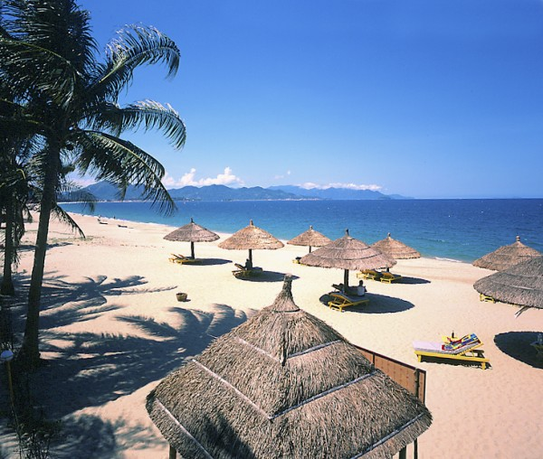
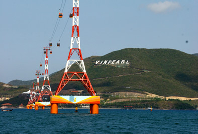

GIỚI THIỆU CÁC ĐỊA ĐIỂM DU LỊCH

Nha Trang là một trong những vịnh biển đẹp nhất Việt Nam. Chính vì vậy dịch vụ du lịch ở đây cũng rất phát triển.
Nếu bạn có ý định đến đây để nghỉ dưỡng,thì hãy chuẩn bị hành lý và lên đường ngay bạn nhé Thành phố Nha Trang là một trung tâm du lịch lớn của cả nước
với nhiều danh lam thắng cảnh nổi tiếng, điều kiện thiên nhiên ưu đãi cả về vị trí, cảnh quan, khí hậu, cùng với nền tảng về lịch sử, nhân văn của mình.
Nha Trang - Khánh Hoà có khả năng phát triển nhiều loại hình du lịch đa dạng. Nằm ở vị trí trung tâm tỉnh Khánh Hòa,
thành phố Nha Trang có diện tích 251 km2, bao gồm 27 xã, phường và 19 hòn đảo,
với trên 2.500 hộ và khoảng 15.000 người sống trên các đảo. Đảo lớn nhất là Hòn Tre rộng 36km2 nằm che chắn ngoài khơi khiến cho vịnh Nha Trang
( nằm trong số 29 vịnh đẹp nhất trên thế giới) trở nên kín gió và êm sóng. Nơi đây được nhiều du khách mệnh danh là "Hòn ngọc viễn đông" nhờ những
bãi tắm đẹp,
con đường nhựa xanh sạch, các ngôi biệt thự ẩn mình trong rừng hoa và cây xanh Ở Nha Trang còn có nhiều trường đại học, học viện,
viện nghiên cứu, các trường cao đẳng, trường day nghề, các trung tâm triển khai các tiến độ kỹ thuật chuyên ngành đã biến nơi đây thành một trung tâm
khoa học - đào tạo của cả vùng Nam Trung bộ. Ngoài các sản vật biển, Nha Trang có nước yến/yến sào (hay tổ chim yến được chúng làm từ nước dãi của mình)
và nem nướng Ninh Hòa. Ngoài ra, nói đến các món dân dã Nha Trang còn nổi tiếng qua món bún cá hay bánh căn. Với món bánh canh Nha Trang thì không giống
với bất kỳ ở một địa phương nào khác. Ngoài ra tại Nha Trang còn có bong bóng cá, vi cá, nước mắm, khô cá thu được xếp vào loại ngon. Hải sản Nha Trang
đa dạng và phong phú với rất nhiều loại và vô số những món ăn khác nhau, nổi tiếng có món nhum - còn gọi là cầu gai hay nhím biển ăn sống với cải bẹ xanh.